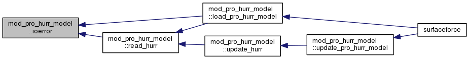
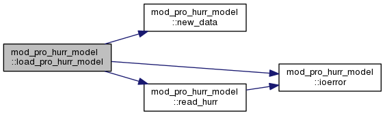
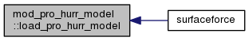
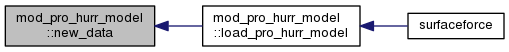
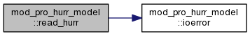
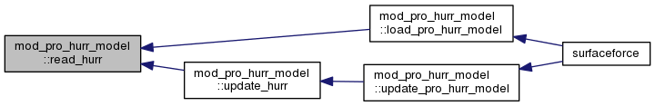
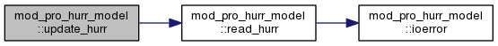
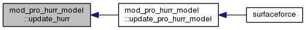
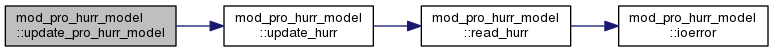
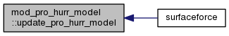

mod_pro_hurr_model Module Reference
Data Types | |
| type | bin_data |
Functions/Subroutines | |
| subroutine | update_pro_hurr_model (NOW) |
| type(bin_data) function, pointer | new_data (dims) |
| subroutine | load_pro_hurr_model (WND) |
| subroutine | ioerror (IOS, MSG) |
| subroutine | read_hurr (HURR) |
| subroutine | update_hurr (NOW, WNDX, WNDY, AIP) |
Variables | |
| type(bin_data), pointer | hurr_next |
| type(bin_data), pointer | hurr_prev |
Function/Subroutine Documentation
| subroutine mod_pro_hurr_model::ioerror | ( | integer | IOS, |
| character(len=*) | MSG | ||
| ) |
Here is the caller graph for this function:

| subroutine mod_pro_hurr_model::load_pro_hurr_model | ( | character(len=*), intent(in) | WND | ) |
Here is the call graph for this function:

Here is the caller graph for this function:

| type(bin_data) function, pointer mod_pro_hurr_model::new_data | ( | integer, intent(in) | dims | ) |
Here is the caller graph for this function:

| subroutine mod_pro_hurr_model::read_hurr | ( | type(bin_data) | HURR | ) |
Here is the call graph for this function:

Here is the caller graph for this function:

| subroutine mod_pro_hurr_model::update_hurr | ( | type(time) | NOW, |
| real(sp), dimension(:), pointer | WNDX, | ||
| real(sp), dimension(:), pointer | WNDY, | ||
| real(sp), dimension(:), pointer | AIP | ||
| ) |
Here is the call graph for this function:

Here is the caller graph for this function:

| subroutine mod_pro_hurr_model::update_pro_hurr_model | ( | type(time) | NOW | ) |
Here is the call graph for this function:

Here is the caller graph for this function:

Variable Documentation
| type(bin_data), pointer mod_pro_hurr_model::hurr_next |
| type(bin_data), pointer mod_pro_hurr_model::hurr_prev |